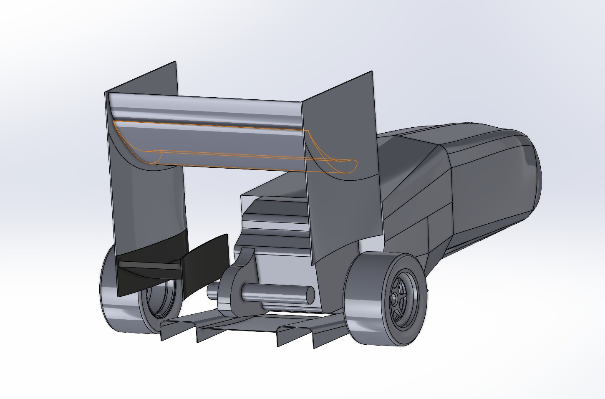
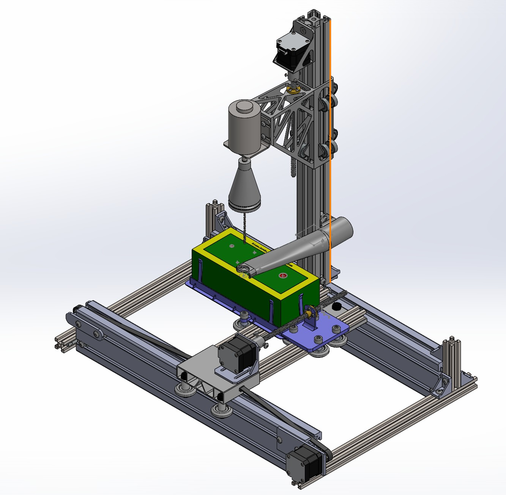
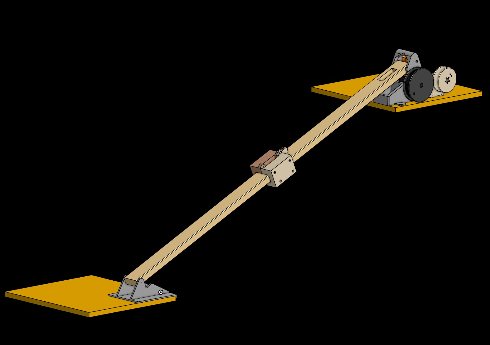
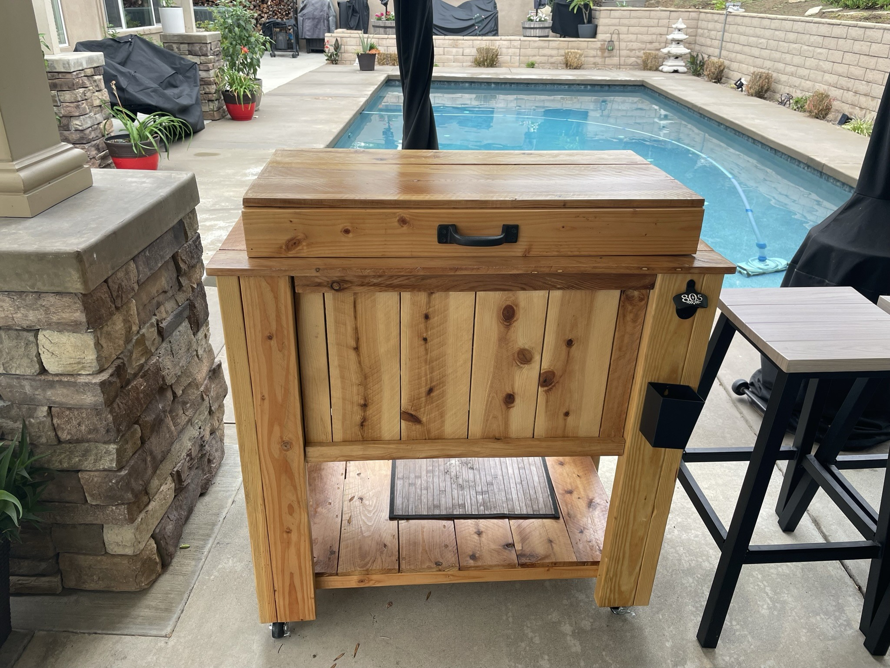

Projects

CFD-driven design of a rear beam wing for Cal Poly Pomona's FSAE vehicle. 21+ simulations in ANSYS Fluent and SolidWorks, 18-page technical report.

Arduino-coded 2-axis CNC router with drill bit tool changer, belt-driven NEMA 17 motors and V-Wheel system — all under $200.

Led team design pulling 4×500g masses 30m in 1.43 sec, $23 under budget. 2:1 mechanical advantage pulley system.

A2 tool steel knife — 51.5 HRC hardness, 13.65 kN max bending load. Custom PLA handle with full heat treatment cycle.

1000+ data points — lux, temperature, insulation via Vernier. Modeled California AC cost at $0.32/KW/365 days in MATLAB.

Full engineering design process from brainstorming to prototyping — 3D CAD assemblies and exploded models with dimensioned drawings in Fusion 360.

First personal CAD project — designed and built a wooden outdoor ice cooler as a gift with cost optimization and material research.

Python app with Tkinter UI and SQLite backend organizing $16,000 of cost data for 14 auto shop customers.

Reverse-engineered and 3D printed a custom rear seat bracket for a Mitsubishi Lancer Evolution 9 with full technical drawings.

MATLAB + RPi SenseHAT with gyroscope and joystick to rotate images on an 8×8 LED display with upright orientation maintained.